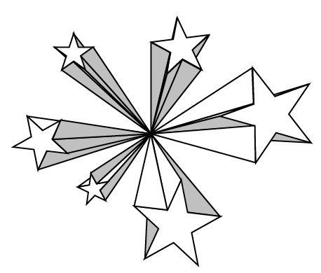
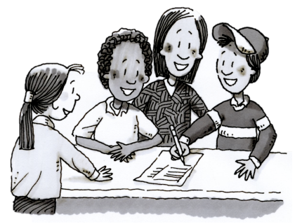
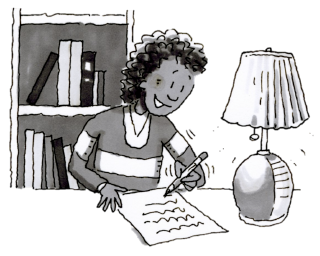
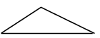
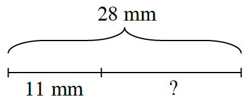
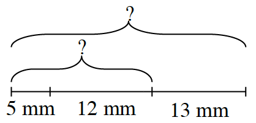
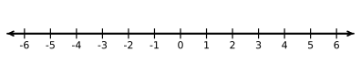

What do they have in common?
Finding Shared and Unique Characteristics
Have you ever tried to learn how to play a new game just by watching other people play it? You were probably watching for patterns in the game, such as what each player did to earn points or what actions earned penalties. If you were watching a game of soccer, for example, you might have figured out that kicking the ball into the goal earned the team one point. You might also have noticed that the goalkeeper is the only player on the field allowed to use their hands. Noticing the patterns could help you describe some of the rules of the game. This type of observation is also called generalizing. When you make an observation about what objects or actions have in common, like the actions that will always allow you to score a point in soccer, you are making a generalization.
Today you will be working in a team with the goal of making generalizations about various sets of objects. As you work, keep these questions in mind:
What do the items have in common?
What makes the items different?
What are other characteristics that could describe the groups or sets?
MATH STARS

What do you have in common with your team members? What makes you unique? Today you will work with your teammates to discover some characteristics that you share and other characteristics that make each person in your team different.
Your Task: Get a copy of the Lesson 1.1.1A Resource Page and scissors. Fold the resource page along the dotted lines and then cut along the solid lines. Unfold the cutout and glue it onto a piece of paper. Write each team member’s name on a star.
As a team, brainstorm something that all of you have in common that the rest of the class does not already know.
List your team’s common attribute on the paper in the center of the four stars.

Find ways that each person in the team is unique from the others (things that are true about that person only), and write those things on each person’s star.
To help you and your team members work together today, each team member has a specific job. Your job is assigned by your first name (or last name if team members have the same first name). Read the “Team Roles” information that follows and use it as a resource as you work with your team on this problem.
Team Roles
Resource Manager: If your name comes first alphabetically:
Make sure your team has a Lesson 1.1.1A Resource Page, scissors, glue, and colored paper.
Ask the teacher when the entire team has a question. “No one has an idea? Should I ask the teacher?”
Make sure your team cleans up by delegating tasks. You could say, “I will put away the ________ while you _________ .”
Facilitator: If your name comes second alphabetically:
Start the team’s discussion of similarities and differences by asking, “What might we have in common?”
Keep everyone discussing each part together by asking questions such as, “Does anyone have ideas for what makes us each unique or different?” “What else might we have in common?”
Recorder/Reporter: If your name comes third alphabetically:
When your team is called on, share your team’s ideas and reasons with the class.
Help the team agree on an idea: “Do we agree that this would not be obvious to the rest of the class?”
Task Manager: If your name comes fourth alphabetically:
Remind the team to stay on task and not to talk to students in other teams. You can suggest, “Let’s move on to the next part of the problem.”
Listen for reasons and ask your teammates to justify their thinking. “Why do you think that?” or “Would this be obvious to the rest of the class?”
WHAT DO THEY HAVE IN COMMON?
In mathematics, it is sometimes useful to make general statements about sets of objects. In this problem, you will be given a set of cards (from the Lesson 1.1.1C Resource Page) with mathematical objects or information on them. With your team:
Determine what each set has in common.
On your paper, record what is written on the cards.
On your paper, add two new examples that would belong to the set.
Describe in words what all of the objects or information on the set of cards have in common.
When you are finished with a set of cards, call the teacher to your team. Explain your generalization to the teacher and get another set of cards.
Review & Preview

Write a letter about yourself to your teacher. The letter will help your teacher get to know you as an individual. The letter should talk about these three general topics: you, you as a student, and you as a math student.
Remember to use complete sentences and make sure that it is neat enough for your teacher to read it easily. Start the letter with “Dear....” Make sure you sign your letter. This assignment should take to minutes to complete. Parts (b), (c), and (d) below have suggestions for what to write about each of the three topics.
You: Introduce yourself using the name you like to be called. Describe your hobbies, talents, and interests. State your goals or dreams. What are you proud of? What else would you like to share?
You as a Student: State the importance of school in your life. Describe yourself as a student. What kinds of classroom activities do you excel at most? What kinds of activities do you find frustrating? Explain which subjects are your favorites. Tell why you like them. How often do you finish in-class assignments? How faithfully do you do your homework?
You as a Math Student: Describe your most memorable moment in math and explain why you remember it. State your favorite math topic and name your least favorite. Explain how you feel about math this year.
Decide what the shapes below have in common. Write your answer in a complete sentence. Then draw two more shapes that belong to the same set.

According to the diagrams below, how long is each unknown piece?


Refer to the number line shown below. List two situations or problems for which you have used a number line in the past.
